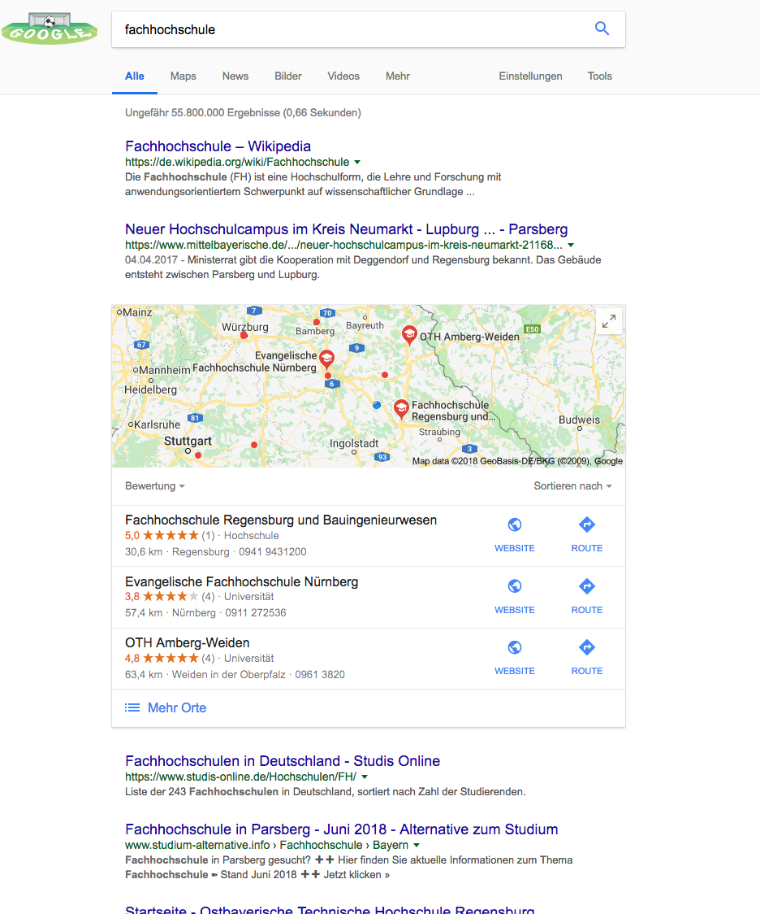

SEO und Akademische SEO
Heinz Wittenbrink
2019-04-04
Einleitung
Ziele
- Verständnis von SEO als Teil user-orientierten Designs
- Verständnis der Besonderheiten akademischer SEO
Bedeutung der Suche

Findbarkeit als Service
Ganzheitliches Verständnis von SEO
- Suche wird Gesamtvorgang erlebt
- Die Phasen beeinflussen sich gegenseitig
- Zeit und kognitiver Aufwand sind entscheidende Faktoren
- Die Qualität der Nutzererfahrung beeinflusst die SEO
Wie läuft die Suche ab und wo liegen die größten Painpoints?
- Touchpoint: Wo findet die Interaktion statt?
- Interaktion: Was tun die User?
- Backend: Was passiert bei Suchmaschine und Server?
- Optimierung: Wie kann ich den Prozess beeinflussen?
Vor der Suche: die Suchintention
- Situation
- Ort und Zeit
- Information, Orientierung, Transaktion
It can be helpful to think of queries as having one or more of the following intents.
- Know query […]
- Do query […]
- Website query […]
- Visit-in-person query, some of which are looking for a specific business or organization, some of which arelooking for a category of businesses
Sucheingabe
Sucheingabe > Touchpoint
- Von der Google-Startseite zur Adresszeile
- Spracheingabe
- Finden ohne Suche
- Siehe: 21 Stats About Voice Search that you Never Knew
Sucheingabe > Interaktion
- Natürliche Sprache und Operatoren
- Verarbeitet werden Text- (Bildeingabe) und Daten über den Client
- Suchvorschläge werden interaktiv ergänzt
Sucheingabe > Behind the scene
- Semantische Interpretation
- Aufruf der personalisierten Suchgeschichte für Suchvorschläge
Sucheingabe > Optimierung
- Keyword-Research
- Synonyme/ Sprachliche Alternativen
Sucheingabe > Optimierung > Keywords
- Suchmaschinenoptimierung beginnt immer mit der Festlegung der Keywords bzw. der Fragen der User.
- Suche und Suchverhalten liefern die wichtigsten Daten über die User einer Website.
Sucheingabe > Optimierung > Keyword-Clouds
- Vor dem Verfassen einzelner Inhalte sollten alle relevanten Keywords/Fragestellungen erhoben werden.
- Es dürfen sich nicht unterschiedliche Inhalte zum selben Keyword Konkurrenz machen.


Sucheingabe > Optimierung > Keywords finden
- Sucheingaben analysieren
- interne Suche
- Foren, Servicefragen u.ä.
- Soziale Medien
- Keyword Tools
Sucheingabe > Optimierung > Keywords finden
Google Keyword Planer (Anleitung, 2018 aktualisiert: Google-Keyword-Planner: Die ultimative Anleitung | ❤ t3n)
Google Suggest (Entpersonalisiert: Individuelle Suchergebnisse bei Google abschalten - computer.daten.netze :: feenders.de - berlin-kreuzberg)
Search Engine Result Page (SERP)
SERP > Touchpoint

- Nach Relevanz geordnet
- Unterschiedliche Inhaltstypen
- Direkte Antworten (Answer Box)
- Knowledge Graph
- Position 0
- Visuelle Inhalte
SERP > Interaktion
- Auswahl eines Suchergebnisses, Scrollen, Weiterklicken
- Einschränkung der Suche
- Zurück zur Eingabe
- Wechsel mit Landing-Pages
SERP > Behind the scenes: Die Power der Suchmaschine
- Interpretation der Sucheingabe
- Indizierung von Inhalten
- Bewerten der Relevanz
- Bewerten der Qualität
SERP > Behind the scenes: Die Power der Suchmaschine
- Aggregation der Inhalte
- Herkömmliche und selbstlernende Algorithmen
- Content-Tester
- Semantische Interpretation, Cognitive Computing
- Ranking Signals
SERP > Interpretation der Sucheingabe > Hummingbird

SERP > Indizierung von Inhalten
SERP > Bewerten der Relevanz und Qualität
Search Quality rater guidelines (PDF)
SERP > Bewerten der Relevanz und Qualität
SERP > Ranking Signals
The Periodic Table of SEO Success Factors - Search Engine Land
SERP > Optimierung
KPI: Ranking
- Indizierbarkeit sicherstellen
- Erreichbarkeit und Gepflegtheit
- Zuordnung der Inhalte zu URLs
- Semantisch korrektes Markup
SERP > Optimierung
- Benennung der Inhalte in URLs, Titeln und Überschriften
- Benennung der Inhalte in Navigations- und Inline-Links
- Bilder und Medien beschreiben
- Inhaltliches Profil
SERP > Optimierung
- Trennen von Informations-, Orientierungs- und Transaktionsinhalten
- Inhaltsqualität
- Aktualität
- Reputation und Verlinkung
- Vertrauenswürdigkeit der Quelle
SERP > Optimierung > Indizierung
- Ist der Google-Bot als Crawler zugelassen? (robots.txt/User-Agent-Weiche)
- Wird die Webseite regelmäßig von Google gecrawlt?
- Werden wichtige Verzeichnisse oder Unterseiten blockiert?
- Existiert eine gültige sitemap.xml?
- Werden wichtige Inhalte der Webseite durch die robots.txt oder über die Robots-Meta ausgeschlossen?
(Nach: SEO-Audit in 13 Schritten)
SERP > Optimierung > Indizierung
- Wieviele Seiten sind im Index?
- Wieviele Seiten sollten im Index sein?
- Sind die wichtigen Bereiche indexiert?
- Anzahl der URLs, die in der Sitemap hinterlegt sind versus wieviele sind im Index?
- Weisen wichtige Bereiche der Website keinerlei Besucher über Suchmaschinen vor?
(Nach: SEO-Audit in 13 Schritten)
SERP > Optimierung > Zuordnung zu URLs
- Werden überflüssige doppelte Inhalte vermieden?
- Gibt es bei notwendigen doppelten Inhalten
canonical-Links? - Konkurrenzieren Seiten für dieselben Abfragen?
- Wird die Indexierung verhindert, wo sie überflüssig ist?
- Sind die Sprachen korrrekt angegeben?
SERP > Optimierung > Navigation
- Ist die Seitennavigation leicht verständlich?
- Verfügt eure Seite über eine Breadcrumb-Navigation?
- Sind alle wichtigen Unterseiten in maximal vier Klicks erreichbar?
- Sind die Unterseiten richtig kategorisiert und thematisch miteinander verknüpft?
- Sind die URLs sprechend und nicht zu lang?
(Nach: SEO-Audit in 13 Schritten)
SERP > Optimierung > Benennung der Inhalte
- Werden Titel oder Überschriften wiederholt?
- Gibt es generierte, nicht sprechende Titel oder Überschriften?
- Wird in Titeln oder Überschriften bedeutungsloser Marketing-Sprech verwendet?
- Gibt es zu lange Titel?
- Sind alle URLs sprechend/lesbar?
SERP > Optimierung > Interne Links
- Gibt es Fehlerseiten?
- Gibt es verwaiste Seiten?
- Sind Seiten falsch weitergeleitet?
- Gibt es Widersprüche bei der Verlinkung?
- Gehen mehr als 100 Links von einer Seite aus?
- Gibt es wichtige Seiten mit zu wenig Links?
- Sind relevante Seiten „zu weit“ von der Startseite entfernt (Klickpfad)
(Nach: SEO-Audit in 13 Schritten)
SERP > Optimierung > Semantisch korrektes Markup
- Ist das HTML der Seiten valide?
- Wird überflüssiges Markup zur Präsentation verwendet?
- Ist die Hierarchie der Überschriften korrekt?
SERP > Optimierung > Google Richtlinien
Snippet
Snippet > Touchpoint
Gemeint ist die Kombination von der großen Überschrift, dem Teasertext und der URL der angezeigten Seite, die bei der Ergebnisliste einer Suchmaschine angezeigt wird.
Snippet > Rich Snippet
Rich Snippets sind erweiterte Suchergebnisse, die neben Titel, URL und Description weitere Elemente wie Bewertungen, zusätzliche Sitelinks oder sogar Bilder enthalten können.
Snippet > Entscheidung für den Klick
- URL und Headline
- Zitat
- Strukturierte Information
Snippet-Interaktion
- Scannen
- Klicken
Snippet > Behind the Scene
- Auswahlkriterien für das Snippet
- Integration in den Knowledge Graph
Snippet > Optimierung
KPI: Click Through Rate
- Sprechende URLs
description- Strukturierte Daten
- Zusammenfassung in Listen
Snippet > Optimierung > Google Hinweise
Aussagekräftige Titel und Snippets für Suchergebnisse erstellen
Snippet > Optimierung > Structured Data
Aufrufen der Landing Page
Touchpoint: Übergang zur Landing-Page
- Zeit
- Einblendungen
- Aufbau nach dem Start
Laden der Landing Page > Interaktion
- Zurückklicken
- Abbruch der Suche
Laden der Landing-Page > Behind the scene
- Generieren der Seite
- Caching der Seite
- Transportzeiten
Laden der Landing Page > Optimierung
KPI: Ladezeit - Ladezeit verkürzen - Seitenaufbau steuern
Laden der Landing Page > Optimierung > Werkzeuge
- Pingdom Website speed test
- Google Pageload-Tool PageSpeed Insights
Landing Page
Landing Page > Touchpoint
- Above the Fold und Below the Fold
- Screen-/Viewport-Größe
- Scanbarkeit
- Wahrnehmbare Hierarchie
Landing Page > Interaktion
- Beschäftigung mit dem Inhalt
- Bouncen
Landing Page > Behind the Scene
- Inhaltliches und visuelles Design entsprechen den Suchintentionen
Landing Page > Optimierung
KPI: Bounce Rate
- Sofortiges Erkennen des gesuchten Inhalts
- Abstimmung auf Suchintention
- Relevanz-Signale, Kontextualisierung
Inhalt
Inhalt > Touchpoint
- Entspricht den Suchintentionen
- Enthält Call-To-Actions
Inhalt > Interaktion
- Rezeption der Inhalte oder Transaktion
- Folgen von Links/Navigationssignalen
- Befolgen von Call-To-Actions
Inhalt > Behind-the-scene
- Redaktion
- Funktionalität
- Marketing
Inhalt > Optimierung
KPIs: Verweildauer, Aktionen
- Qualität sicherstellen
- Navigationspfade ermöglichen
- CTAs einfügen